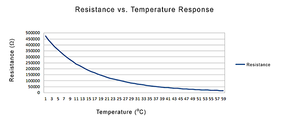
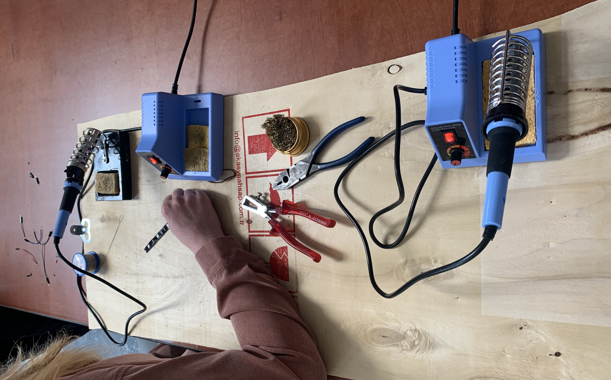
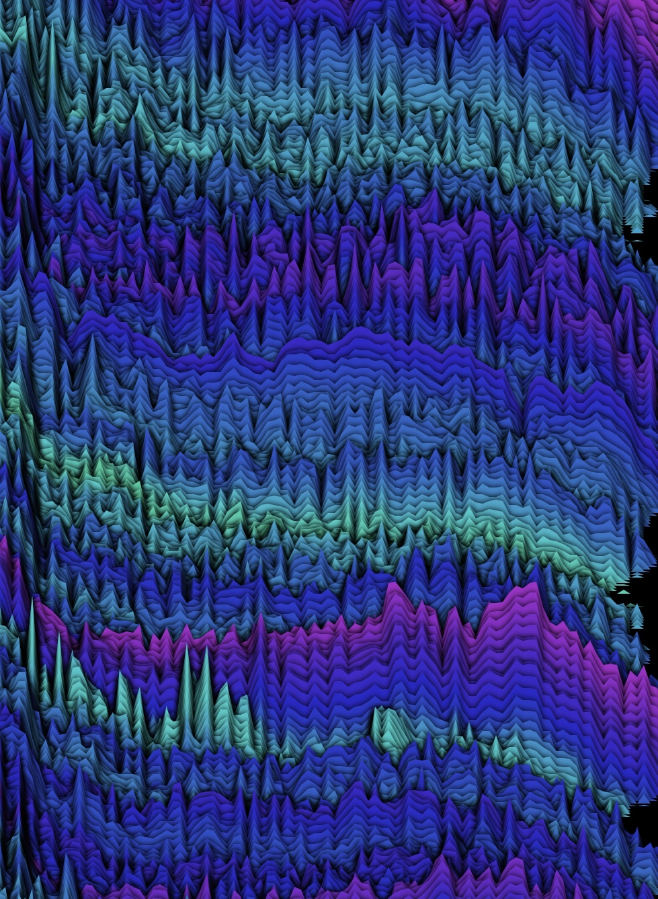
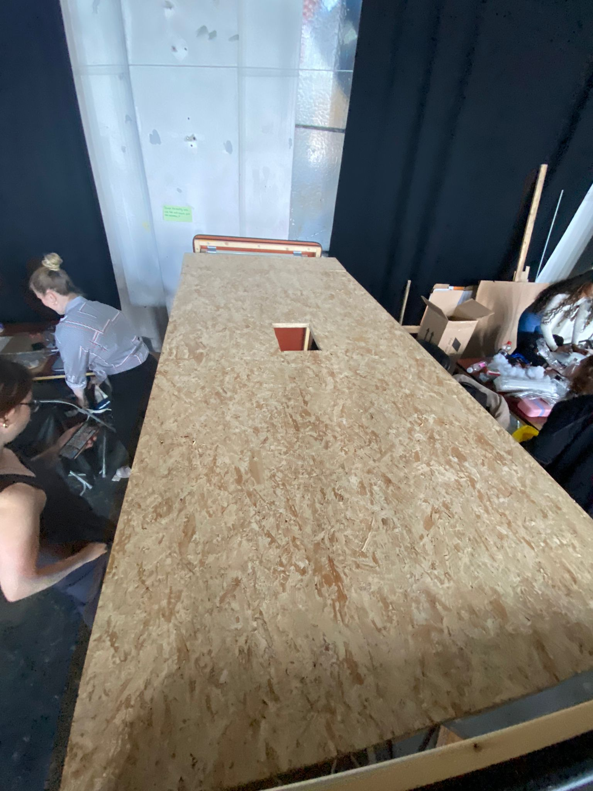

In our first day of lab week, we were being assigned in a group based on the topic (playful interaction) we chose. In our group we have 2 UXD & 3 CMD students. Since most of us didn't know each other, we spent the morning to get to know each other better and came up with our group name together. Based on our background and interests, we decided to name our group WingPlay.
As we want to keep options for what concept we should create for the expo open, we decided to first spend some time on our own to different cases and possible technology that we can use, as well as inspirations from others. I created a miro board for the group to share informations that we found.

Our team name WingPlay gave us some inspirations at some point as well, one of us popped up
with the
ideas of clouds and nature. From there, we came up with the thoughts of including different
sensations in an installation, e.g. what are gonna happen when users interact with the cloud
or some other object? What are the possible sensations that we can include? What can be the
response?
We divided our tasks, where three of our groupmates decided to dive into understanding
lights & learn how to connect LED stripes with wires together. Yulia & I tried to learn
about the interaction with the temperature sensor from Arduino. Therefore, we chose NTC
sensor to measure temperature. However, NTC sensor is actually a thermistor which is a type
of resistor that its resistance
is dependent on temperature. In other words, what we read on serial monitor isn't the
temperature but the resistance value. Because of that,
I did some research to understand the correlation between resistance and temperature. With
the below graph, we can see that
when the temperature increases, resistance decreases. In converse, when temperature
decreases, resistance increases.

We first tried to create the relation with temperature and one LED light, i.e. brightness of
LED changes based on the temperature.
Then we created different states with two LED lights, i.e. high temperature > green light on
| red light off; temperature drops to
a certain degree > green light off | red light on.
Although we managed to make it work, I also realized that after we touched the sensor, it
takes a fairly long time for the temperature to
decrease again. It is because the heat that we have given to the sensor when we touched it
will actually stay on the surface.
Thinking about it more, i think with measure temperature based on the user's
input would give a lot of risk as all of us has different body temperature and
the temperature and weather condition can also affect our body temperature at that moment.
Therefore, it is difficult to set a "standard" or conditions. It is interesting to learn
more about NTC sensor, but I personally think it is not
pratical for our case. It seems like measuring distance or capacitive sensor would make more
sense.
Afterwards, I tried to catch up what the other part of the group was doing as well. As
mentioned, 3 of them were learning how to connect LED stripes with wires together.
From I understood, we can either use a LED light strip connecting clip or by soldering to connect wire and the strip together. With the materials we had, we went for soldering and it works! This is a nice wrap up of our first day :)
In day two, our group continues with what we have on day one. We found that there is a library called FastLED Animation Library for arduino, where includes a wide variiety of controlling the light strip in different settings and effects. From there, we dived deeper into LED light strips. For example, our group managed to try out with delaying the light, LED strip turn on and off with holding or pressing button. I created a video to show the progress for LED strip of the day:
Later, Yulia and Hanna also went outside to check out materials that we might need. They bought some cottons to miminc the cloud and also managed to match it with the LED lights!
At some point, I found it hard that everyone focus on the same type of technology.
Therefore, we spilt again to do more different things which Marissa focused on
importing sound in processing with capacitive touch. Meanwhile I started to experiement
more on p5js.
Since what we did during workshop was mostly about computer vision and capture body
position by using PoseNet, I thought it might
be nice to explore other direction such as sound. Therefore, I
started to understand more all the way from the basic function AudioIn(). Below are
videos with voice over that show my whole process of what I understand, try out and
created eventually. Along the way, what I have learned isn't only with getting audio
from the input of our computer's audio,
but also how we can visualize the audio and even how can we make the movement smoothly
by using lerp().
To bring it to the next level, I thought to convert the solid circle that I was experimenting to multiple circles with outlines only and the gap will be changed based on the mic level. After I managed to make it work, I made the circle into half circle, so that the visual changes will be even more obvious:
↑ sounds on to see the effect
In day 3, we worked on multiple capacitive sensors with sound and visual, LED strips and
more with
p5js! Yulia and Hanna did a lot of experiment on LED strips. In this day, they managed
to turn on and off of
the LED by capacitive touch.
Me and Marissa actually spent quite a lot of time figuring out how to implement 2
capacitive sensors in arduino and connect it with processing. What we learned in the
workshop was only with one sensor, which is pretty straightforward that there will only
be one value to send to processing. But when there are two of the same sensors, how can
we actually differentiate which value belongs to which sensor? Therefore, we tried to
change the sensor output name as "capA/B" + value. By doing so, we can clearly know that
the value refers to the capacitive sensor A or B. It might sound very easy here, but we
were struggled a lot by even how to change the name of sensor output because what we
need to consider is not only about the "text" or value but rather to convert the integer
to string. After the naming issue in arduino was solved, we had the next problem which
is how can we ask processing to identify then? We asked Daniel, the assistant during the
lab week for advice and he guided us on how to first ask Processing to differentiate
which sensor has the interaction; then read the value from that sensor and act upon the
sensor value. The solution of this is to create an array and use split() function to
break the string into pieces, but also to declare the values as float. To be honest,
till now I’m still not sure why we have to change it from int to float for that, but we
only figured out when we tried different possibilities to make the code work.
#storyofprogramming
Below is an overview video to show what we tried out with capacitive touch in the day:
With this whole process, I have come to a point to realize that my groupmates are very
quick to understand Arduino and coding itself. I can manage to understand or help
to some extent of course, but I feel like they are relatively more capable with Arduino.
I
raised my concern to the group and we think it will be the best if i can focus on p5js,
processing or anything that is related to visuals. This will make the group work more
efficiently and all-rounded too. Therefore, after me and marissa solved the puzzle of
setting up multiple capacitive sensors and connected them to processing, I moved on to
p5js and decided to explore some other possibilities that are related to sound. This
led me to my next experiment - wave form and frequency spectrum.
The inspiration was from the audio visualizer. Sometimes when we play an audio, the
audio bar will
exhibit its waveform. Thereofre, I tried to look for a way to do this on p5js and to add
more visual changes on it. For example, I wanted to keep the trace of the waveform and
let it to fade out later:
Afterwards, I tried to apply HSB color model into the graph but I found out the results were often within red color zone. I believe this is because of the environment of Maakhoven and I will need to adjust and map the range to fit with the color space. Therefore, I decided to leave this for my task the next day.
This day we were all divided to do different things! I dived deeper into frequency
spectrum in p5js, went to Gamma
to measure and look for materials for the installation; Marissa continued to work on
sounds settings
on Processing; Yulia and Hanna continued with
LED strips and Yulia herself managed to use the touchpoint pad we bought in Arduino;
whereas Sara was learning
how to make a ventilator with Arduino.
Below is an overview of these activities:
In terms of frequency spectrum, I had a lot of experiment with that! I'd like to keep
the trace of frequency spectrum with a certain frame rate so that
the screen can be filled with colorful graph. In addition, as what I mentioned
in the previous day,
I want to make the frequency spectrum graph in the environment of Maakhaven more fit
with the HSB color space. Therefore, I tried to
find out what is the best range and the below code is my result:
.png)
With this result, it gave me an idea of painting a mountain view with frequency
spectrum. Therefore, I tried to set the standard frequency range in Maakhaven into
green to blue color range. At the same time, i also learned to add more visual retouch
on shadow. I managed with the first part, but
the below video you can see that I messed up a bit with the shadow (thought to share
some failure video & photo too ;D):
.png)
With a lot of trials and errors, I accidentally made a mountain with ocean sceney. With the below video, you can see that there are black gaps inbetween each graph. What I did was making the the graph unparallel and copy the previous graph by slightly moving it to a different coordinates:
.png)
To be honest, I'm very fascinated by how frequency spectrum can be visualized. On my way back home that day, I even ran the code in the train and was very happy with how it looks:
↓ result that i got, isn't it so surreal :)?
We started off day 5 by setting up the base of the installation:
Afterwards, me and Sara went to purchase materials that we need for making clouds and wires. Besides that, I also talked to the team and see whether what I made in previous days could be integrated in our ideas. We realized that we hadn't discussed what is the approach of our installation. Therefore, we also spent some time to discuss but we decided to not combine with p5js. My group preferred to create visual patterns on processing as it would be connect with capacitive sensors that we had been working on. Because of this, I was assigned to create visuals for our installation. Besides that, our group also encountered different technical issues after we linked battery packs to LED strips. When we were testing, we found out the brightness of the LED strip was not stable and it even went off after a while. What we realized after hours of understanding what was happening is that, the batteries are charging up the arduino and the LED at the same time. It is not powerful enough to fill up both but we also have to bear in mind that what is the maximum voltage that the LED can take, otherwise there is a possibility that we will burn it. Therefore, we decided to try 4aa battery holder with 3 batteries inside and also connect to power bank the next day.
As in my personal work, I made two visual patterns on Processing, which are starfields and waveform. I was looking for more advanced functions on Processing and I found a reference about using noise() to gerenate wave pattern. I was once again got attracted by line, wave form. Therefore, I wanted to try to expand what I learned from the reference to create the wave form in my style:
.png)
.png)
In the below video, you can see my final result and overview of the day:
Day 6 was an absolute tried day! Over the past weekend, I found my neighbour tossed away a huge chipboard and it is actually a very good fit with our installation. But since I don't live in the hague, I had to ask my boyfriend to drive me with the board and we needed to leave home at 7am :s Fortunately, the board fits nicely with the setup!
I also spent some time to saw other wooden blocks for supporting the
installation. (I do not have the photo for this but I hope it is understandable that our
group was really busy on this day and felt stressed that we might not make things work
when
the expo is coming, so not that everyone can help following you to take photo.)
After that, our group continued with the electronic issue that we faced from yesterday.
The tricky part was that the LED strip seem to work, but after a while the battery
actually
got too hot and the battery holder shell was
even slightly melted. I read up more online and tried to understand the physics behind.
I learned that the brightness of LED is only determined by the voltage - but they need
sufficient amps to work in a stable fashion. The working voltage of the LED strips that
we purchased is 5v and max power is 9W. In other words, we need a 5v power supply of at
least 2W. When we connect them in series they will draw 5.4A at most, which is still
quite a lot and with the thin flimsy wires that we got from our Arduino kit, they are
probably
not rated for much more than 1A. On the other hand, how we connect batteries actually
bring
difference too. By connecting batteries in series, their voltages add;
by connecting batteries in parallel, we add their power capacity but the voltage remains
the same. As we want the installation to be on for the whole expo (say roughly 6 hours),
at 5.4A we need 32400 mAh, which is a lot for regular batteries. Usually regular AA
batteries have like 2500mAh, so we will need about 13 of them to have our LED lights run
for 6 hours. The conclusion that we can draw here - as time is running out, a 5V 10A
switching power supply is our best and final bet. Therefore, we ordered it and really
hope that it will be delivered on time.
The next thing - circuit. I have to be very honest, I didn't even know "short circuit"
in my life before. Luckily, we got some helps with making the correct circuits:
Short circuits happen when hot wire touches a conductive object that it's not supposed
to. It can cause appliance damage or even a fire. To
prevent this,
you can see that some cables are taped so that they are not
exposed and won't be able to touch other object/wire.
Even though we didn't have the power supply yet, we can still use batteries to
experiment for a short time. Therefore, we wanted to experiement with integrating more
sensors:
That's not really the end of the calculation for the day anyway. For me, when i get back to continue working on my processing, I also started with understanding sin, cos, tan and radians. At least one positive thing with visual is that, you get to see how it actually looks and how just 1 value can affect the whole graph. Below video is a combination of few different settings that I tried:
Final version of two visual patterns:
In this day, we finally combined the visual patterns that I created with capacitive sensors. As we have the code of 1 sensor that can store multiple options, we used the same approach where all the visual patterns are stored in the same sensor:
We also received our power supply and it works without problem! It's just a shame that all the batteries and batteries holders that we purchased then became no use. In general, day 7 is actually a crafty day for me. After we received the power supply, we also started to measure how we should extend the wires, ensemble the LED strips on the board, as well as to prepare the cotton cloud layer so that we can attach on the board later. Here is an overview:
In our original plan, we wanted to use iPad for displaying the visual pattern. But because of the money value, power and possibility of getting overheat, we decided to change to computer monitor. Therefore, I also went back to school to borrow it and give it a try the next day.
This is day is the moment where we tried to compile everything into the whole installation! In the morning, I was making different capacitive sensors. Since we had multiple effects from different sensors, we wanted to make the sensor more distinguish rather than a wire itself. For example, I made the capacitive sensor for sounds into a musical note shape and wrapped the sensors with aluminum foil.

After that, we connected
the computer monitor on top of the
chipboard and checked whether it works. On the other hand, we also spent a while to
check and test whether LED strips with different sensors work before putting the cloud
layer.
For some reason, some of the sensors didn't react when me and the other classmate from
South Korea were touching. We were joking if the sensor is being racist; but later we
learned the fact that
people who are in darker skin indeed have a harder time to interact with the capacitive
touch. I'm not sure if this happens on us as well, but I still feel very strange and
speechless to know this fact. Also, when I was talking to the group with the swing, they
shared their experience with
capacitive touch - gravity would affect the result. In order to interact properly, we
have to make sure our body is grounded. I was not aware at all!
Anyway, our led
strips swtting worked pretty well and here we decided to embed the cloud layer. I
combined all these process into a video as overview:
This is the day! We had a lot of testings with different people and we think the
sensitivity of the capacitive touch can still be improved. We found a library for MPR121
(our touch sensor model) platform and learned that we can define the sensitivity for
touch detection and release. It has certainly improved the performance. We also decided
to ask participants to hold
the sensor for a second rather than touching the fingertip only.
The other thing we improved was the sound options. I think some of the original
soundtracks (it was disco/party music) unmatch to our calm and dreamy installation,
Therefore, I tried to look for more melodies that can fit better.
Ater adjusting all these technical issues, we had our final retouch of how the
installation looks in general:
Other than that, as we had prepared and setup most of the things from the previous days, we didn't have many last minute problems. Below is the video of our final testing, you can check more details of the installation in next chapter.
Gallery:

.jpeg)